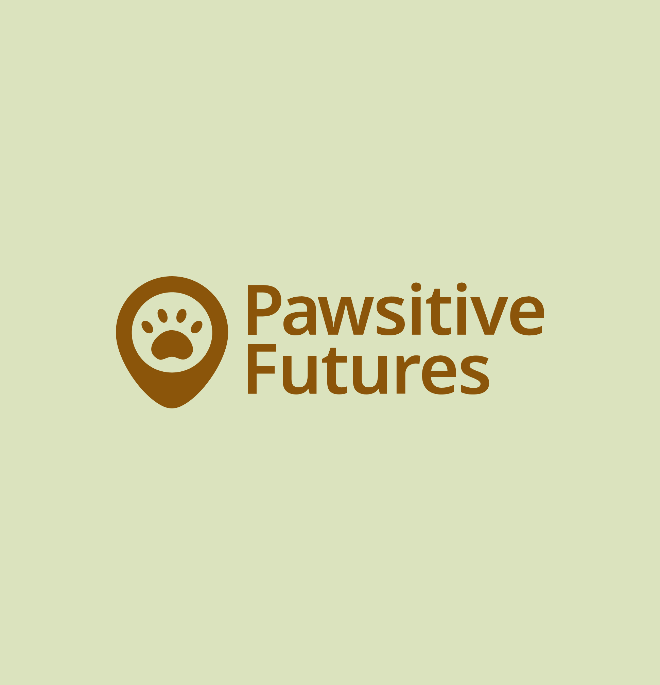
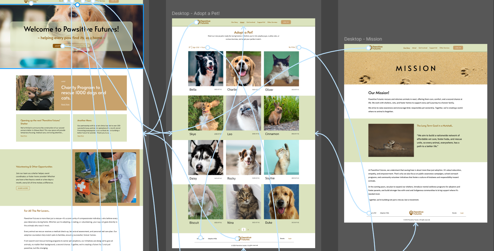

UX Design: Pawsitive Futures
A complete UX design process for the mock project "Pawsitive Futures", an animal adoption center, along with a demo website developed for three pages.
Role
UX Designer & Web Developer
Duration
14 Weeks
Tools
Figma, FigJam, Visual Studio Code

01. Research
"Used intustry standard practices and techniques to understand the target market and design a unique user experience"
_
02. Design

Process of the design
With the research, I compiled the basic design into a moodboard and styletile to get an understanding of visual elements. The design is finished with the step by step process of designing lo-fi wireframes to interactive prototypes.
Interested in my work?
Open to co-op/internships for Summer 2026.